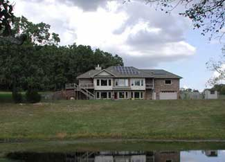
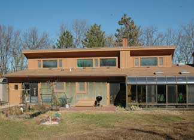

Being passive isn’t always a bad thing, especially when it’s passive solar heating and cooling. The idea behind passive solar is to design buildings that take advantage of natural heat from the sun in winter; and shade and wind and in the summer. Although the concept has been used in many cultures for centuries, passive solar design principles recently have been refined a great deal, even since the 1970s.
Passive solar, on it’s most basic level, works like this: Rays from the sun enter a building through windows, heat the air and are absorbed by floors, walls, furniture, etc. Some materials, such as stone, brick and plaster, more effectively absorb the heat. As the air cools at night, the absorbed heat releases into the building and maintains a comfortable temperature.
Kelly Lerner, architect and author of Natural Remodeling for the Not-So-Green House, says there are four things to consider when designing or remodeling a building to most effectively utilize solar energy: south-facing glass (glazing), shading, insulation and thermal mass.
“In most North American climates, the right amount of south-facing glass is 7 to 12 percent of the floor area of the building - a lot less than you might think if you’ve seen solar home designs from the ’70s,” she says. “In the ’70s, we really used too much glass with too little thermal mass, so instead of passive solar heat, we had something more like ‘passive-aggressive’ solar heat, creating buildings that were too hot during the day and too cool at night. Too much glazing can be a detriment on cold winter nights, allowing heat to escape.”
Longtime passive solar expert Ron Judkoff, director of the Buildings and Thermal Systems Center at the National Renewable Energy Lab, says, “It’s the thermal storage part that’s kept passive solar from becoming more widespread. It’s also the biggest additional expense: adding brick or another internal thermal mass instead of drywall.”
Judkoff points out that production builders are accustomed to using lightweight materials not suited to storing (and releasing) heat gathered through south-facing glass. “But you need adequate thermal storage mass for a passive solar thermal building to work as it’s supposed to,” he says.
Insulation is another important aspect of passive solar design. “There’s no point in getting heat from the sun into the house if it simply escapes through air or the walls,” Lerner says.
A well-designed passive solar building is warm in winter and cool in summer. The design principles, though somewhat variable with location, can be utilized to reduce cooling costs - even in warm areas of the South. “Good shading is essential for the summer months to prevent overheating,” Lerner says. “On summer solstice, south-facing windows should be completely shaded from 9 a.m. to 3 p.m. Check Sustainable by Design for sun angles at your latitude and draw a diagram to calculate shading for your home.”
Implementing passive solar strategies saves energy and money, perhaps the two most common reasons for interest in passive solar design. David Wright, author of The Passive Solar Primer: Sustainable Architecture, says “A new passive solar home, if properly designed, can be twice as energy efficient as a conventional home - at little additional cost. Retrofitting an existing home is more costly and may not achieve the same cost/benefit, even with some clever bells and whistles. This is not to say improving the thermal performance of an existing residence is not worthwhile.”
But there are further advantages people don’t frequently consider. “Thermal storage in a passive building gives you more leeway if the power goes down. Passive buildings will maintain comfort and be more resistant to frozen water pipes than conventional buildings - or even super-insulated buildings - if you’re without a fuel source for a few days,” Judkoff says.
Proper planning is imperative when considering passive solar.
“Analyze the solar resources available in your climate during the time you need heating,” Lerner says. “In Spokane, for example, we don’t have a lot of sun during the coldest months, but during the ‘shoulder seasons’ of spring and fall, we get good passive solar heating. Almost any climate in the United States can make good use of solar heating during some parts of the year.”
Passive solar design can be effective in all kinds of buildings. “Today we lave a lot of knowledge, materials and systems that allow us to create energy independent structures, from homes to skyscrapers, in most any climate zone on Earth,” Wright says.
And new materials in development may make passive solar more cost-effective, and more widely accepted. According to Judkoff, new materials with potential primarily involve adding thermal mass inside buildings, such as paperless wallboard (the paper on standard wallboard is a thermal barrier).
If you’re not quite ready to remodel your house, you can start experimenting with thermal mass and passive solar. “My house doesn’t have a lot of thermal mass, so in the summer I frequently fill a bathtub with water in the morning to help keep the house cool during the day.” says Lerner. “Sometimes I use a fan to blow air over the water for some evaporative cooling, too.”|
 WHY NOT GO SOLAR/MOTHER EARTH NEWS CU Passive solar design has come a long way since the ’70s. Modern solar houses are attractive as well as energy efficient. |
 TROY GRIEPENTROG Sun spaces are a great way to take advantage of solar heat. Open the doors between the house and the sun space during the day to add heat to the house. Close the doors at night to prevent warm air from escaping. |
|